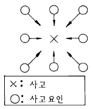
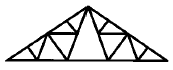
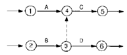
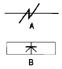
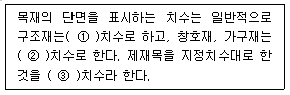

건축목재시공기능장 (2004-07-18 기출문제)
1과목: 임의 구분
1. 바른 추녀에서 추녀 수평길이는 서까래 수평길이의 몇 배인가?
- √2배
- 3배
- 1/√2배
- 1배
(정답률: 알수없음)

2. 목구조의 접합에 있어서 잘못된 것은?
- 이음· 맞춤의 단면은 응력의 방향에 직각이 되게하는 것이 좋다.
- 이음· 맞춤은 그 응력이 적은 곳에서 해야 한다.
- 이음· 맞춤은 중요한 구조부분에는 가능한 한 복잡한 형식을 택해야 한다.
- 부재는 가능한 한 적게 깎아 내야 한다.
(정답률: 알수없음)
3. 마루틀에 관한 기술 중 옳지 않은 것은?
- 주택의 1층마루틀은 납작마루보다 동바리 마루를 더 많이 사용한다.
- 짠마루틀은 큰 보위에 작은 보를 걸고 그위에 장선을 건다.
- 짠마루틀은 간사이가 6m 이상일 때 쓰이고 간격은 2.7-3.6m 정도이다.
- 장선마루틀은 보를 걸고 장선을 건 마루틀이다.
(정답률: 알수없음)
4. 공정계획 작성에 있어서 주의할 사항이 아닌 것은?
- 재료수입의 난이, 상품제작일수, 운송상황을 고려하여 발주시기를 잡는다.
- 시공기재와 재료는 공사착공과 동시에 반입되어야 현실상 유리한 점이 많다.
- 미장, 방수, 도장공사는 충분한 공기를 조절함이 좋다.
- 여름, 겨울철은 작업일수를 고려함이 좋다.
(정답률: 알수없음)
5. 아스팔트 방수를 모르타르 방수와 비교한 내용 중 옳지 않은 것은?
- 보수시에 불량개소의 발견이 용이하다.
- 시공기일이 많이 걸린다.
- 공사비가 많이 든다.
- 신더콘크리트로 보호할 필요가 있다.
(정답률: 알수없음)
6. 경제적인 철근콘크리트 보의 단면을 결정하려면 어느 사항을 고려하여야 하는가?
- 가능한 한 보의 춤을 크게 한다.
- 콘크리트 단면을 적게 하고 철근을 많이 넣는다.
- 가능한 한 철근을 적게 넣는다.
- 평형 철근비를 사용한다.
(정답률: 알수없음)
7. 특정한 입도를 가진 굵은골재를 거푸집에 채워 넣고 그 굵은골재 사이의 공극에 특수한 모르타르를 주입하여 만드는 콘크리트는?
- 프리캐스트 콘크리트
- 프리스트레스트 콘크리트
- 프리팩트 콘크리트
- 펌프 콘크리트
(정답률: 알수없음)
8. 목재성질에 대한 설명 중 틀린 것은?
- 목재의 기건까지의 수축률은 대략 전수축률의 1/2정도이고 수축과 비중사이에는 정비례의 관계가 있다.
- 열전도율이 섬유에 평행한 방향의 경우에는 엇결 또는 나무결 방향의 1.5 - 2배 정도 크다.
- 목재는 200℃ 전후가 되면 인화가 되며 250 - 320℃에 달하면 발화한다.
- 전기 저항치는 방향에 따라 다르며 섬유에 직각방향은 평행방향의 2.3 - 8.0배 정도이다.
(정답률: 알수없음)
9. 평면과 직선상태를 검사하거나 정확한 직선을 그을 때 사용하며 특히 대팻집 밑바닥의 상태가 평탄한가를 점검할 때 사용하는 것은?
- 그무개
- 곱자
- 하단자
- 연귀자
(정답률: 알수없음)
10. 지름이 50㎝인 원목을 제재하면 최대 몇 ㎝의 정사각형 목재로 제재할 수 있는가?
- 35.35㎝
- 25.25㎝
- 30.3㎝
- 39.45㎝
(정답률: 알수없음)
11. 다음 그림은 어떤 사고발생 모형을 나타낸 것이다. 특징 을 가장 잘 기술한 것은?

- 요인이 연속적으로 하나의 요인을 일으켜 사고를 일으키는 형태
- 연속적으로 일어난 두개의 요인이 모여 사고를 일으키는 형태
- 사고가 일어나는 시간과 장소의 요인들이 일시적으로 집중하는 형태
- 여러형태의 연속적인 요인이 하나 또는 2개 이상 모여 어떤 시기에 또는 장소에 한꺼번에 일어나는 형태
(정답률: 알수없음)
12. 설계도를 분류할 경우 본설계도를 일반도,구조도, 설비도로 대별할수 있는데 다음중 구조도에 속하지 않는 것은?
- 기초복도
- 단면도
- 배근도
- 지붕틀도
(정답률: 알수없음)
13. 합성수지 가운데 열 가소성 수지가 아닌 것은?
- 염화비닐 수지
- 폴리에틸렌 수지
- 아크릴 수지
- 실리콘 수지
(정답률: 알수없음)
14. 다음 중 혼합시멘트가 아닌 것은?
- 고로 시멘트
- 실리카 시멘트
- 플라이애시 시멘트
- 알루미나 시멘트
(정답률: 알수없음)
15. 철골조의 내화피복공사에 사용되지 않는 재료는?
- 암면
- 석면
- ALC판
- 유리면
(정답률: 알수없음)
16. 공무적 공장관리 사항이 아닌 것은?
- 노무관리
- 공종별관리
- 현장 자산관리
- 자재관리
(정답률: 알수없음)
17. 내구성을 위하여 목조의 방부제로 가장 많이 사용하는 것은?
- 크레오소오트
- 오일스테인
- 수성페인트
- 래커
(정답률: 알수없음)
18. 주로 가구를 제작할때 접착제 바른곳을 죄어서 안정시키는데 사용하는 철물을 클램프(clamp)라 한다. 작은 부재를 고정할 때 주로 쓰이며 사용이 간편한 클램프는 다음 중 어느것인가?
- 죔쇠(bar clamp)
- 나사 클램프(hand-screw clamp)
- C-클램프(C clamp)
- 스프링 클램프(spring clamp)
(정답률: 알수없음)
19. 왕대공 지붕틀에 관한 기술 중 틀린 것은?
- 왕대공 지붕틀은 지상에서 만들어 달아올려 시공함이 편리하다.
- ㅅ자보 위 중도리는 1m 간격으로 걸쳐 시공한다.
- 달대공과 빗대공은 ㅅ자보 및 평보에 꺽쇠로 보강 시공한다.
- 평보는 ㅅ자보, 깔도리, 기둥, 처마도리의 중심과 일치해야 한다.
(정답률: 알수없음)
20. 수직먹과 수평먹과의 관계를 이루는 물매는?
- 평물매와 되물매
- 평물매와 귀물매
- 평물매와 반물매
- 평물매와 된물매
(정답률: 알수없음)
2과목: 임의 구분
21. 계단 거푸집 조립시 필요하지 않은 판은?
- 덧판
- 옆판
- 디딤판
- 챌판
(정답률: 알수없음)
22. 기둥 거푸집 시공에 관한 기술 중 틀린 것은?
- 사각형 기둥의 거푸집 널은 4면에 모두 전장을 한 단위로 하여 제거한다.
- 띠장은 모서리 및 귀에서 내밀어 －자형으로 조립한다.
- 압력이 클 때에는 긴장재로 결박한다.
- 기둥 위는 보 물림 자리를 따낸다.
(정답률: 알수없음)
23. 거푸집 치수를 유지하기 위한 긴결재의 사용방법으로 옳지 않은 것은?
- 못은 널 두께의 2.5배 정도 길이의 것을 사용한다.
- 꺽쇠는 지름 9mm 내외, 길이 9∼12㎝, 갈구리 길이 2.5∼4.5㎝의 것을 사용한다.
- 볼트는 양나사 볼트를 사용한다.
- 철선은 불에 구운 철선 #18∼21번 선을 사용한다.
(정답률: 알수없음)
24. 자유경첩으로 문짝을 달아 안팎으로 자유롭게 여닫을 수 있는 문은?
- 회전문
- 자재문
- 접이문
- 미서기문
(정답률: 알수없음)
25. 거푸집 적산시 1m2당 필요한 목재량은 얼마인가?
- 0.04 m3
- 0.07 m3
- 0.14 m3
- 0.24 m3
(정답률: 알수없음)
26. 재해발생과 근속년수와의 관계에 관한 설명 중 옳은 것은?
- 근속년수가 짧은사람 특히 1년미만인 사람의 재해발생이 많다.
- 근속년수가 짧거나 긴 사람은 재해 발생이 적고 중간 정도의 층에서 재해발생이 많다.
- 근속년수 즉, 연령이 많은 사람이 신체적인 조건때문에 재해발생이 많다.
- 근속년수와 재해발생과는 특별한 관계는 없고 순간적인 부주의로 인한 사고가 많다.
(정답률: 알수없음)
27. 단면도에 대한 기술로 옳지 않은 것은?
- 건축물 구조체의 표준이 되는 것이 단면도이다.
- 건물을 바깥벽선에 직각이 되게 수직면으로 절단하였을 때 보이는 입면도이다.
- 단면도를 그리기 위해 절단되는 위치는 평면도상에 가는 이점쇄선으로 표시한다.
- 단면도에 표기해야 할 사항은 건물높이, 거실높이, 창대높이, 지붕의 물매, 지반에서 바닥까지의 높이 등이다.
(정답률: 알수없음)
28. 벽돌쌓기의 주의사항에 관한 기술로 옳은 것은?
- 방습층은 지표면위 마루널 밑에 1∼3cm 두께로 한다.
- 하루쌓기 높이는 2∼3m가 적당하다.
- 내쌓기는 보통 1/4B 한켜씩 또는 1/8B 두켜씩 내 쌓는다.
- 각층은 구조적으로 튼튼한 곳에 집중하중이 작용하도록 한다.
(정답률: 알수없음)
29. 다음 트러스 그림의 명칭은?

- 하우트러스
- 플랫트러스
- 워렌트러스
- 핑크트러스
(정답률: 알수없음)
30. 테라코타(terra-cotta)에 대한 설명 중 틀린 것은?
- 압축강도는 800∼900㎏/cm2 정도로서 화강암보다 강하다.
- 석재 조각물 대신 사용하는 장식용 점토 소성제품 이다.
- 1개의 크기는 제조 취급상 0.5m3∼0.3m3 이하가 적당하다.
- 대리석보다 풍화에 강하므로 외장에 적당하다.
(정답률: 알수없음)
31. 네트워크 공정관리에서 작업 B에 종속되어 있는 공사는?

- A
- B
- A, B
- C, D
(정답률: 알수없음)
32. 목재의 취재율이 바르게 된 것은?
- 침엽수 70%, 활엽수50%
- 침엽수 40%, 활엽수80%
- 침엽수 70%, 활엽수30%
- 침엽수 50%, 활엽수50%
(정답률: 알수없음)
33. 끌에 관한 설명 중 잘못된 것은?
- 끌은 날, 목, 자루의 세부분으로 되어 있다.
- 끌은 크게 구멍파기끌과 깍기끌로 구분한다.
- 끊는날의 각도는 20∼30° 정도이다.
- 긴홈의 바닥, 깊은 홈을 다듬는 데는 둥근끌이 쓰인다.
(정답률: 알수없음)
34. 다음에 표시한 목재의 마름질을 위한 먹줄치기 부호의 내용은?

- A는 먹지우기, B는 정오표시
- A는 절단, B는 정오표시
- A는 먹지우기, B는 중심표시
- A는 심먹, B는 절단표시
(정답률: 알수없음)
35. 다음 ( )안에 알맞는 내용은?

- ① 정, ② 마무리, ③ 제재
- ① 마무리, ② 정, ③ 제재
- ① 제재, ② 마무리, ③ 정
- ① 제재, ② 정, ③ 마무리
(정답률: 알수없음)
36. 다음 창호에 사용하는 철물이 바르게 연결된 것은?
- 미서기창 → 지도리
- 여닫이창 → 도르래
- 오르내리창 → 레일
- 여닫이 중량문 → 플로어 힌지
(정답률: 알수없음)
37. 청동의 주성분은 구리와 무엇의 합금인가?
- 아연
- 주석
- 알루미늄
- 니켈
(정답률: 알수없음)
38. 색채, 무늬가 다양하고 아름다워 고급 실내장식재로 사용되며, 열이나 산에 약한 석재는?
- 대리석
- 석회암
- 응회암
- 안산암
(정답률: 알수없음)
39. 지명경쟁 입찰제도를 채택하는 가장 중요한 목적은?
- 공비를 절감하기 위하여
- 공기를 단축하기 위하여
- 부적당한 업자를 배제하기 위하여
- 예산범위 안에서 공사를 완성시키기 위하여
(정답률: 알수없음)
40. 네트워크 공정표에 관한 사항 중 옳지 않은 것은?
- 주공정선(Critical path)은 여유가 없는 경로이다.
- Activity type network 공정표에서는 작업을 화살표로 표시한다.
- Network 공정표를 작성할 때 기후조건 특히 강우(降雨) 등을 고려한다.
- Network 공정표는 현장경험이 풍부한 현장소장이 혼자서 작성하는 것이다.
(정답률: 알수없음)
3과목: 임의 구분
41. 합판의 특성에 대한 설명 중 옳지 않은 것은?
- 방향에 따른 강도차가 적다.
- 나비가 큰 판을 얻을 수 있다.
- 수축, 팽창에 따른 변형이 적다.
- 무늬가 좋은 판을 얻기 힘들며, 판재에 비해 비경제적이다.
(정답률: 알수없음)
42. 왕대공 지붕틀에서 보강철물 사용이 잘못 연결된 것은?
- 왕대공과 평보 - 감잡이쇠
- 빗대공과 ㅅ자보 - 꺽쇠
- ㅅ자보와 평보 - 안장쇠
- 달대공과 평보 - 볼트
(정답률: 알수없음)
43. 다음 철골공사용 기계 중에서 리벳 박기용으로 사용되어지는 것은?
- 가이 데릭
- 배처 플랜트
- 바이브레이터
- 임팩트 렌치
(정답률: 알수없음)
44. 철근 콘크리트조 슬래브의 배근에 대한 설명 중 옳지 않은 것은?
- 주근과 배력근은 모두 D10 이상의 이형철근이나 Ø 9이상의 원형철근, 또는 지름6mm 이상의 용접 철망을 사용한다.
- 배근 간격은 바닥 슬래브의 중앙부에서, 주근은 30cm이하로 하고, 배력근은 20cm 이하, 또 슬래브 두께의 2배 이하로 한다.
- 단변과 장변 각 방향에서 철근 전 단면적은 콘크리트전 단면적의 0.2% 이상으로 한다.
- 철근의 이음 위치는 중앙부의 주근과 배력근의 경우 모두 굽힘 부분이나 주변부에 둔다.
(정답률: 알수없음)
45. 재해의 지표로 사용되어지는 용어 중에서 어느 일정기간(연간 근로시간 100만 시간)에 발생한 재해의 빈도수를 나타내는 용어는?
- 천인율
- 도수율
- 강도율
- 재해율
(정답률: 알수없음)
46. 연료가 불완전 연소할 때 발생하는 가스로 자동차의 배출가스가 주요 발생원인인 것은?
- N2
- O3
- CO2
- CO
(정답률: 알수없음)
47. 공기 중에 분진이 존재하는 작업장에 대한 대책으로 옳지 않은 것은?
- 재료나 조작방법을 변경한다.
- 작업을 건식화 한다.
- 보호구를 착용한다.
- 장치를 밀폐하고 환기 집진 장치를 설치한다.
(정답률: 알수없음)
48. 깊은 구멍을 팔 때 어떤 모양의 끌이 좋은가?
- 끌의 몸이 짧고 넓다.
- 끌의 몸이 얇고 넓다.
- 끌의 몸은 짧고 목이 길다.
- 끌의 몸이 두껍고 날이 두껍다.
(정답률: 알수없음)
49. 도리, 토대, 멍에에는 어떤 이음이 적당한가?
- 촉이음
- 턱걸이주먹장이음
- 산지이음
- 걸침턱이음
(정답률: 알수없음)
50. 판재 여러장을 쪽매하여 조립하고 접착제를 바른 뒤 조일때는 어떤 기구를 사용하는 것이 좋은가?
- 띠쇠
- 꺽쇠
- 죔쇠
- 거멀못
(정답률: 알수없음)
51. 사개 맞춤은 어느 용도에 가장 좋은가?
- 나무상자 만들기
- 액자틀 만들기
- 마루널 이음
- 기둥과 도리의 맞춤
(정답률: 알수없음)
52. 다음 중 귀물매가 없는 지붕 형식은?
- 맞배지붕
- 모임지붕
- 합각지붕
- 팔작지붕
(정답률: 알수없음)
53. 목구조에서 아래서부터 순서대로 나열된 것은?
- 멍에 → 토대 → 깔도리 → 층도리 → 처마도리 → 평보
- 멍에 → 토대 → 층도리 → 깔도리 → 평보 → 처마도리
- 토대 → 멍에 → 깔도리 → 층도리 → 평보 → 처마도리
- 토대 → 멍에 → 층도리 → 깔도리 → 처마도리 → 평보
(정답률: 알수없음)
54. 널 문에 사용되는 쪽매 중 부적당한 것은?
- 반턱쪽매
- 맞댄쪽매
- 제혀쪽매
- 주먹장쪽매
(정답률: 알수없음)
55. 공기를 단축시킬 수 있어 수중콘크리트 시공에 적합한 시멘트는?
- 보통 포틀랜드 시멘트
- 중용열 포틀랜드 시멘트
- 조강 포틀랜드 시멘트
- 백색 포틀랜드 시멘트
(정답률: 알수없음)
56. 거푸집의 측압에 관한 사항으로 옳지 않은 것은?
- 콘크리트 붓기의 속도가 느릴수록 측압이 크다.
- 콘크리트의 시공연도가 클수록 측압이 크다.
- 온도가 낮을수록 측압이 크다.
- 콘크리트 다지기가 충분할수록 측압이 크다.
(정답률: 알수없음)
57. 유성도료의 특징으로 옳지 않은 것은?
- 광택 및 내수성, 내약품성이 우수하다.
- 칠솔도장에 적합하다.
- 피도장물과의 부착성이 좋다.
- 도료의 휘발성이 적어 도막의 살오름이 좋다.
(정답률: 알수없음)
58. 평보와 같이 지붕틀의 중요 부재로 압축력을 받으며 평보 위에 안장맞춤을 하는 부재는?
- 중도리
- 대공가새
- ㅅ자보
- 빗대공
(정답률: 알수없음)
59. 목재 제품에 관한 설명 중 틀린 것은?
- 집성목재 : 단판을 서로 직교시켜 붙인 것으로 잘 갈라지지 않고 뒤틀림이 없다.
- 합판 : 무늬가 좋은 판을 얻을 수 있고 곡면판으로 만들 수 있다.
- 코펜하겐 리브 : 강당, 극장, 집회장 등에 음향 조절용으로 사용 된다.
- 파티클 보드 : 표면이 평활하고 강도에 방향성이 없고 큰 면적의 판을 만들 수 있다.
(정답률: 알수없음)
60. 다음 중 탄력성이 풍부하고 충격강도가 큰 접착제는?
- 비닐계 접착제
- 페놀계 접착제
- 요소계 접착제
- 멜라민계 접착제
(정답률: 알수없음)
따라서 바른 추녀의 추녀 수평길이와 서까래 수평길이는 직각삼각형에서 빗변과 인접한 변의 길이가 같은 직각삼각형과 직각삼각형에서 빗변과 먼 변의 길이가 같은 직각삼각형의 대각선 비율과 같습니다.
대각선 비율은 √2:1이므로 바른 추녀의 추녀 수평길이는 서까래 수평길이의 √2배입니다. 따라서 정답은 "√2배"입니다.